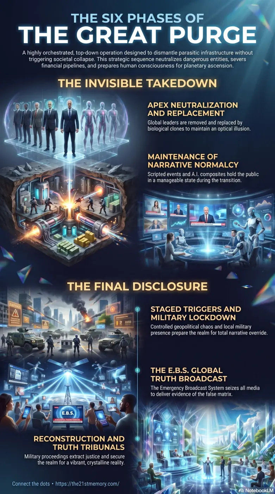

Planetary Ascension
Planetary ascension and the orchestrated dismantling of the parasitic control pyramid.
The phased Great Purge — from parasite targeting through truth disclosure and stabilization.
Test your grasp of The Purge Phases — eight-phase top-down dismantling of parasitic control, clones, E.B.S., and the path to the Second Realm.

Planetary ascension and the orchestrated dismantling of the parasitic control pyramid.

The eight sequential phases of liberation from the 3D artificial matrix.

The measured path through the Great Purge toward the Second Realm.
The execution of The Great Purge is a highly orchestrated, multi-tiered operation designed to systematically dismantle the worldwide parasitic infrastructure without triggering a full-scale societal collapse. Operating from the top of the control pyramid downward, this strategic sequence neutralizes the most dangerous entities, severs their financial pipelines, and gradually prepares human consciousness for the ultimate transition. Managed by a unified command structure, the phases ensure that the illusion of normalcy is maintained until the precise moment required to shatter the false reality and initiate planetary ascension.
The initial strikes against the controllers of this realm occurred under the cover of the Covid lockdown operations. Every major world leader—including royals, prime ministers, presidents, high military brass, banking heads, Vatican hierarchy, and media moguls—has already been neutralized and replaced. What the public perceives as ongoing leadership is entirely optical, driven by advanced mimic technology and A.I. composites. The world stock market, previously backed entirely by human trafficking, drug pipelines, and organ harvesting, was functionally collapsed when special forces seized shipping routes and dismantled the subterranean networks. All present geopolitical tensions are entirely staged theatrics dictated by a unified A.I. script to awaken the masses.
The operational timeline is divided into eight sequential phases:
Phase One: Target the Most Dangerous Parasites. The operation began at the apex of the power pyramid. The objective was to remove child predators and satanic operators without inducing total societal collapse. All major power players were arrested or removed and instantly replaced with stand-ins and holographic composites.
Phase Two: Infrastructure Sweep. The sweep expanded to corporate CEOs, entertainment and sports icons, and cultural influencers. These figures were stripped of real-world power in the big Whitehat takeover, cutting the connection and influence the parasites held over public politics, tastes, and thinking to raise the Frequency Vibration Consciousness.
Phase Three: 3rd Realm Collapse. Focused on the underground economy funding parasite power, military forces targeted smuggling pipelines, adreno-chrome operations, and child organ harvesting. Cargoes were seized and DUMBS were dismantled, permanently removing the parasites' lifeblood money and human supply.
Phase Four: Narrative Maintenance. To hold Sleepers in a manageable state until the mass reveal window, the operation continued "business as usual". Replaced leaders give scripted speeches, hold fake meetings, and attend ceremonies to maintain the illusion.
Phase Five: Trigger Events. Geopolitical tensions, phased air raid sirens, and supply disruptions are deliberately staged to push the mass public consciousness to the edge. This forces Sleepers to question everything without descending into full panic.
Phase Six: The Lockdown Window. Visible military presence is established on the streets to maintain order, replacing traditional world police. A global lockdown initiates the total takeover by the E.B.S., accompanied by staged internet restrictions. This creates the controlled environment necessary for the truth broadcast.
Phase Seven: E.B.S. Action. Media and the internet are totally seized. Disclosures are released en masse, providing names, faces, and proof of election fraud, child trafficking rings, and satanic cult rituals. This phase is designed to shatter the false reality in a single blow.
Phase Eight: Aftermath and Stabilization. Truth Tribunals commence to process the world's rich, powerful, and famous. Arrests, confessions, and executions are carried out to secure the realm for reconstruction and the ascension processes.
The Purge Phases represent only the physical manifestation of the Mega Breakdown, deeply interconnected with the imminent frequency collapse of the Parasitic Overlay. The physical arrests and infrastructure dismantling secure the ground, while a staged World War III Activation Scare Event and a subsequent fake alien invasion (Project Blue Beam) push human consciousness to its breaking point. The Whitehats utilize adversarial actors like Russia, China, and Iran as black chess pieces within a controlled script, staging cyber attacks and limited missile strikes to simulate chaos. This carefully modulated trauma forces the NPCs (Non-Player Characters) to glitch, allowing the high-frequency signals of Resonating Sols to pierce the static.
The necessity of moving through strict, measured phases ensures the Great Awakening does not result in total chaotic self-destruction. By utilizing stand-ins and clones, the Whitehats bought the vital time window needed to dismantle world infrastructure safely. The ultimate tactical goal of the eight phases is to completely separate humanity from the 3D artificial matrix, clearing the field for the Real Craft Arrival. As the staged conflicts peak and the parasitic control grid dissolves, the Great Split occurs, bringing forth the Second Realm—a pure, vibrant, unpolluted crystalline reality where resonating souls return to their true origins.
This topic is free to share. Support the archive →